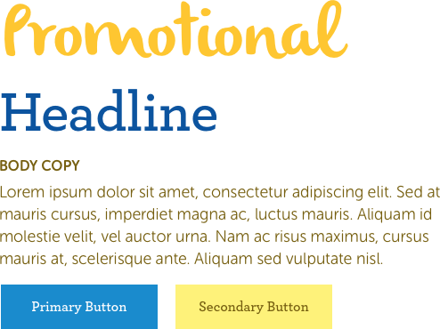

The Solution
A new focus
The new art direction chosen for Karicare takes a much softer pallet. The yellows are much more welcoming with the strong blue acting as a nice accent. A secondary palette was also introduced as a set of callout colours. The new demographic of more everyday mothers lead to the choice of more adult fonts. in the end the mother is purchasing the formula, so the brand should feel within her age range.

This change also influenced the style of imagery. Instead of product images being deep etched and placed on coloured backgrounds like previously, the products now sit within realistic scenarios. The images of people also include soft, realistic backgrounds.